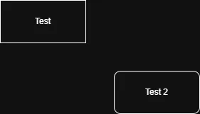

How the Widget Works
2026-07-20
This is the introduction to the article.1

The implementation
#include <stdio.h>
int main(void) {
puts("Hello");
return 0;
}The rest of the article goes here.
A longer explanation or an external source.↩︎